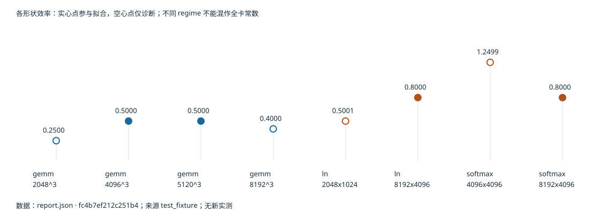

来源 test_fixture；η=0.5000，β=0.8000。历史参考或测试夹具，无新实测、无硬件PASS。
精确原始JSON · 复算底稿 · 未应用的参数patch · 留出CSV

| 点 | 参与拟合 | 单点效率 |
|---|---|---|
| gemm_2048^3 | False | 0.2500 |
| gemm_4096^3 | True | 0.5000 |
| gemm_5120^3 | True | 0.5000 |
| gemm_8192^3 | False | 0.4000 |
| ln_2048x1024 | False | 0.5001 |
| ln_8192x4096 | True | 0.8000 |
| softmax_4096x4096 | False | 1.2499 |
| softmax_8192x4096 | True | 0.8000 |
| 留出点 | 源预测 ms | max复算 ms | 源测量 ms | 源误差 % | 复算误差 % | 瓶颈 |
|---|---|---|---|---|---|---|
| gemm_6144 | 4.75750 | 4.75750224 | 4.85265 | +2.0 | +2.000 | compute → compute |
| ln_16384x4096 | 0.52429 | 0.52428800 | 0.51380 | -2.0 | -2.000 | memory → memory |
| softmax_16384x4096 | 0.52429 | 0.52428800 | 0.54002 | +3.0 | +3.001 | memory → memory |
| attn_mha16_s512 | 0.01638 | 0.02202547 | 0.03276 | +100.0 | +48.737 | memory → compute |
| attn_mha16_s1024 | 0.08810 | 0.08810189 | 0.13215 | +50.0 | +49.997 | compute → compute |
误差=(measured/prediction−1)×100；正值表示预测偏乐观。未使用留出点重新拟合。
raw SHA256 1f22d360512ff23dbcb0b7e0fbba913ede387612faadfd32fe2d5bf5194c5d6a；report SHA256 fc4b7ef212c251b4a77aff63bcf052dcd84a6f73d3277a5258089612a1dd632a。